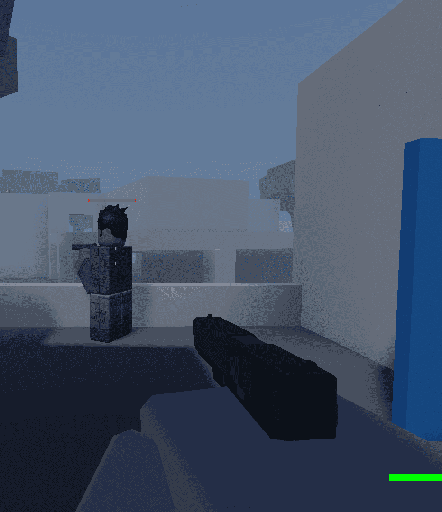
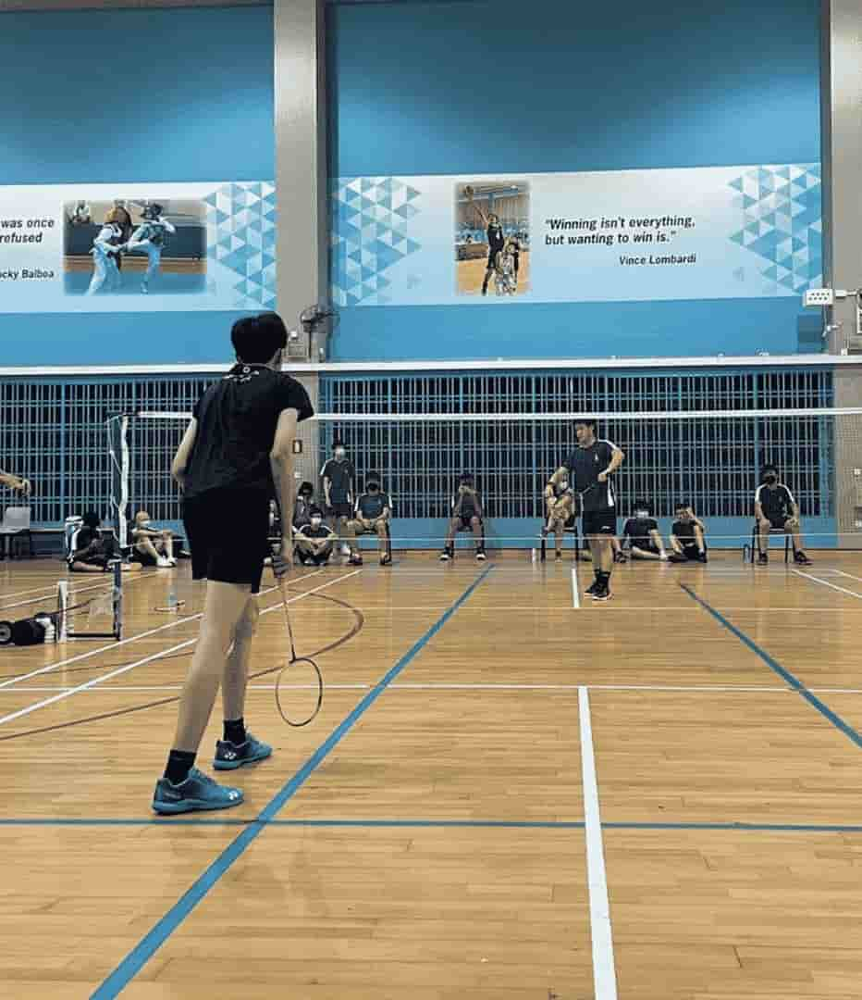
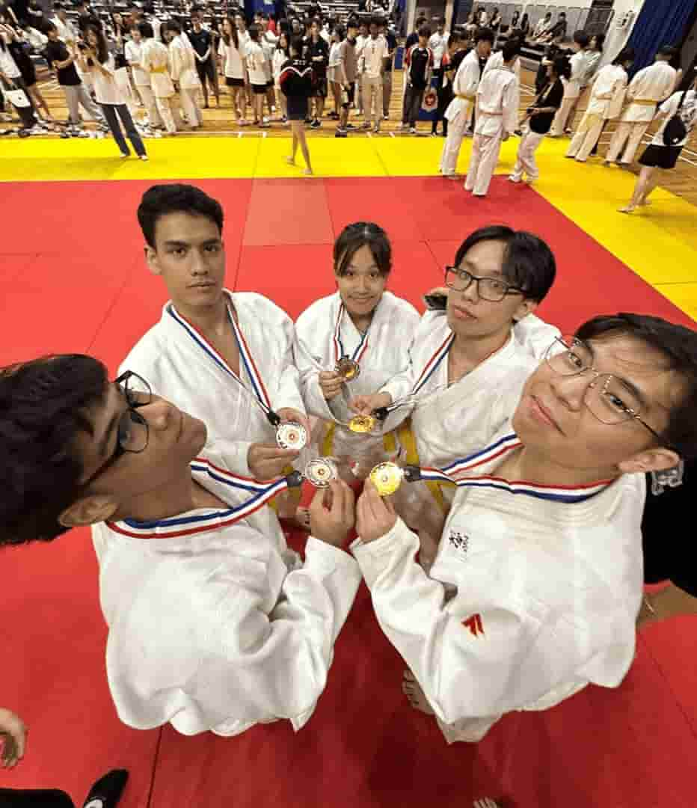

Hobbies
Game Development
I've been interested in game development since I was about 9 years old, when I came across Roblox Studio while playing around on Roblox which quickly turned into a hobby that I've carried with me for years. I enjoy experimenting with game mechanics and see how small changes affect how a game feels to play. While I often start side projects on Roblox Studio, I tend to leave them unfinished because I get bored easily, but for me, the fun is in the process of building and learning, not always the final product. Programming is my favorite part of development, especially when I can bring systems and logic to life in a way that players can interact with.
Badminton
Badminton has been a big part of my life since secondary school as it was my CCA. I have always enjoyed the fast-paced nature of the sport and the mix of strategy and reflexes it requires. These days, I still play whenever I get the chance, mostly for fun or as a way to stay active. I find badminton as a great way to unwind and spend time with friends.
Judo
I started practicing judo when I first entered polytechnic and it quickly became one of my favorite hobbies. Through regular training, I've gained strength, confidence, and a deeper appreciation for technique and timing. Every session pushes me to improve, and I've come to enjoy the sense of community within the club as well.
Featured Hobby: Judo
One of my most memorable experiences in Judo was competing in the Inter-Tertiary Competition back in March 2025.